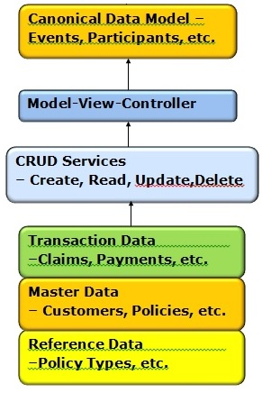
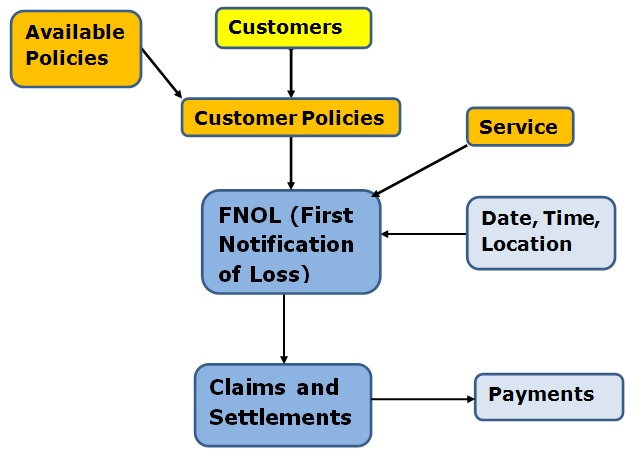
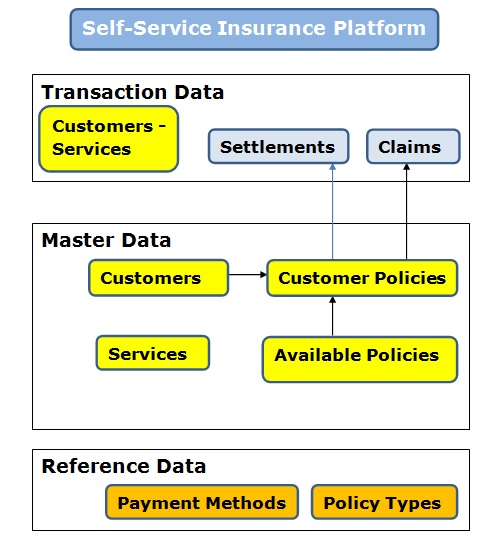
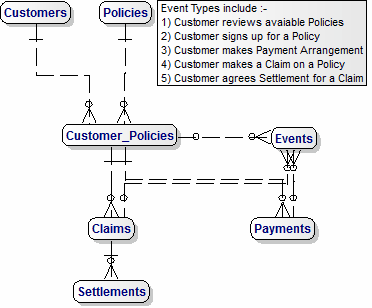
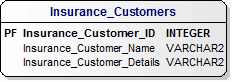
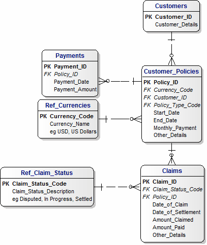
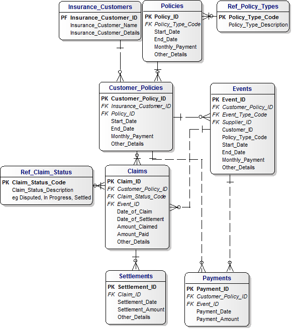
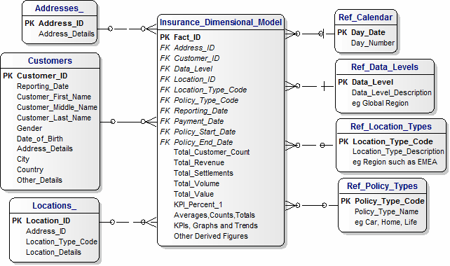
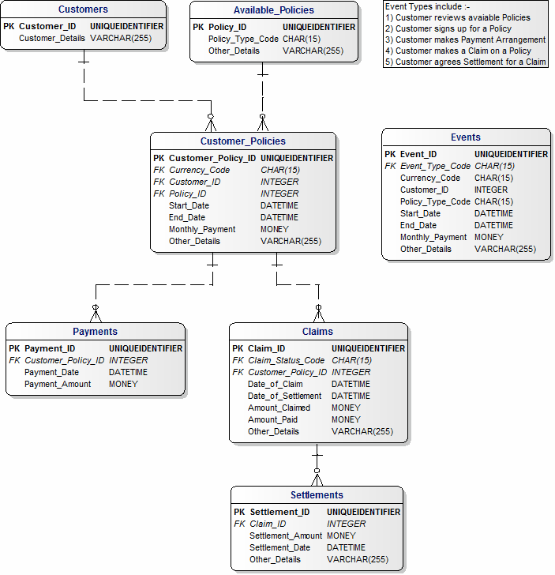
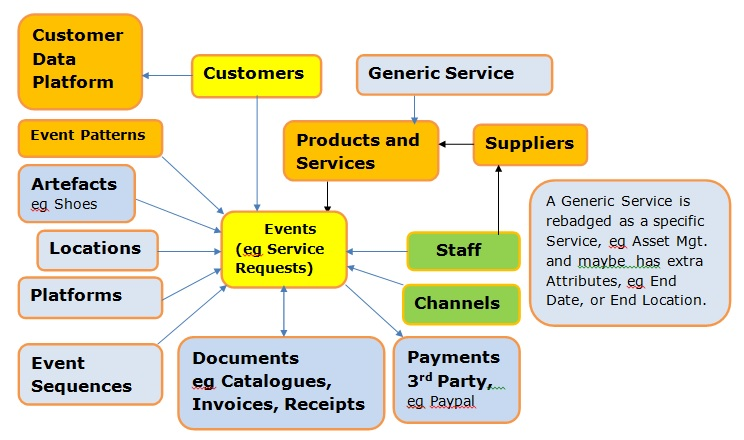

0) KPIs will go here, for example, Total Sales by Policy Type.
1a) Conceptual Data Model - Overview

|
1b) Insurance FNOL Platform Data Model (Conceptual)

|
1c) Self-Service Insurance Platform Data Model (Conceptual)

|
2b) Logical Data Model - Phase 1

2c) Apex Customer Data Model
Created on Tuesday, July 25th. 2017

|
3a) Insurance Logical Model (POC)

|
3b) Apex Events Data Model
Created on Wednesday, July 26th. 2017

|
4) Insurance Dimensional Model

|
5) Logical Data Model (Jan 22nd)
|
6) Logical Data Model - Phase 1
|
8) Physical Data Model (Physical - Phase 1 -Attributes)

|
10 Canonical Data Model for Insurance (Entities)

|
11) Canonical Data Model (Conceptual)

|